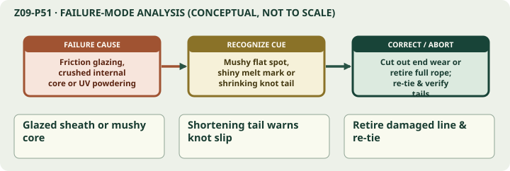

Z09-P51 · Tools and construction · New manuscript
Diagnose slipping knots, glazed synthetic rope and core-sheath damage
Catch cordage wear and knot creep before tensioned tarps, packs or utility lines part unexpectedly.
When it applies · Inspecting camp guylines, haul ropes, lashings and tie-downs after storms, heavy friction or long storage.
Equipment · Visual and tactile inch-by-inch rope inspection in good light.

Actions
- Feel along tensioned utility ropes for flat mushy sections (indicating crushed internal core strands), stiff glossy melted spots (friction glazing) or fuzzy torn outer sheaths exposing white inner filaments.[K09, K08]
- Check all critical utility knots after initial wind gusts or rain—watch for shrinking tails, distorted loops or loosening coils on slick wet cordage.[K09, E16]
- Cut out damaged end segments cleanly (fusing synthetic ends carefully away from dry fuels) or retire the entire rope if mid-line core damage or UV powdering appears.[K09, C02, ED]
Failure recognition · Reusing a sun-brittle, friction-glazed synthetic cord with an exposed inner core to guy out a shelter in rising wind.[K09, E16]
Verify · Confirm uniform round tactile feel, intact unglazed sheath and ample tail security on every active camp knot.[K09, ED]
Stop or change course · Immediately retire any utility cord with core damage, severe sheath cuts, chemical burns or brittle UV chalking.[K09, K08]
Evidence and editorial notes
- C02 · USDA Forest Service / Smokey Bear · Smokey Bear’s Campfire Safety Guide (agency PDF)
- Section: Build your campfire; choose a location · Conditions: Where campfires are currently permitted
Support: Use an established fire ring where required or available. Protect the area from nearby combustible materials, avoid windy conditions and keep water ready.
Limitations: Site clearances vary by fuel load, slope, and wind; no universal safe radius fits all terrain. · Conflicting evidence: None; aligns with USFS-FIRE.
Editorial note: Grounds site-selection and ring-preparation procedures. · Specialist reviewer: Fire prevention and land management
Primary source · checked 2026-11-24 - E16 · NWS · Wind Safety (current web edition)
- Section: Wind Safety > High Wind Hazards · Conditions: Forecast or developing high winds, squalls, or straight-line winds
Support: High winds topple trees, loft debris, and stress lightweight shelters beyond fabric and anchor limits; relocate out of timbered fall zones and into substantial shelter before gusts peak.
Limitations: Tents and tarps lack standardized wind-speed survival guarantees across soil types and pitch angles. · Conflicting evidence: None; avoids unvalidated mph ratings for improvised pitches.
Editorial note: Drives high-wind shelter inspection, guying limits, and abandonment thresholds. · Specialist reviewer: Weather safety and shelter equipment
Primary source · checked 2026-11-24 - K08 · OSHA · Hand and Power Tools (OSHA 3080) (agency PDF)
- Section: Personal Protective Equipment and Work Area Control · Conditions: Cutting, splitting, striking and rigging operations
Support: Maintain stable footing, eye and hand protection appropriate to flying chips or snapped cordage, and clear bystanders outside the swing or snap-back zone.
Limitations: Field kits often lack shop PPE, requiring slower conservative technique and lower-energy methods. · Conflicting evidence: None; drives snap-back and work-circle exclusion zones in Z09.
Editorial note: Enforces conservative work circles and snap-back clearance. · Specialist reviewer: Tool safety and occupational safety
Primary source · checked 2026-11-24
Current assessment · A04-K08 (2026-11-25) · Open: support partial or missing (A04): Eye protection requirements are task-specific. Safe stance, glove choice and recoil envelope require each tool or rigging source. Limits: Specialist review PENDING (Tool safety and occupational safety); publication HOLD. All release decisions pending. - K09 · USDA Forest Service · Handtools for Trail Work (0523-2810-MTDC) (agency handbook)
- Section: Cordage, Anchors and Rigging Boundaries · Conditions: Non-life-safety camp lashing, tarps, haul lines and tie-downs
Support: Cordage strength drops significantly at knots, sharp bends, wet fibers, UV exposure and abrasion; inspect fibers before loading and never use unrated camp cord or improvised bindings for life-safety suspension or climbing.
Limitations: No universal breaking strength applies to natural plant fibers or weathered salvaged rope. · Conflicting evidence: Counters folklore claims equating improvised cordage to rated climbing rope.
Editorial note: Separates camp utility lashing/hauling from life-safety rigging. · Specialist reviewer: Rigging safety and materials mechanics
Primary source · checked 2026-11-24
Current assessment · W2C-E004 (2026-11-25) · Open: cited section not found in the source; escalated: Replacement support identified in FM 3-97.61 paras 4-1 to 4-3 (pages 4-1 to 4-3): sharp edges cut nylon rope under tension; leaving rope knotted or tightly stretched reduces strength and life over time; ultraviolet light deteriorates nylon; inspect before and after each use; select rope by task, type, diameter and tensile strength. Limits: No support found for the wet-fiber strength-loss part of K09. FM context is mountaineering rope, not camp cord.
Source lineage · USFS cordage safety; new manuscript · Classification · New manuscript.